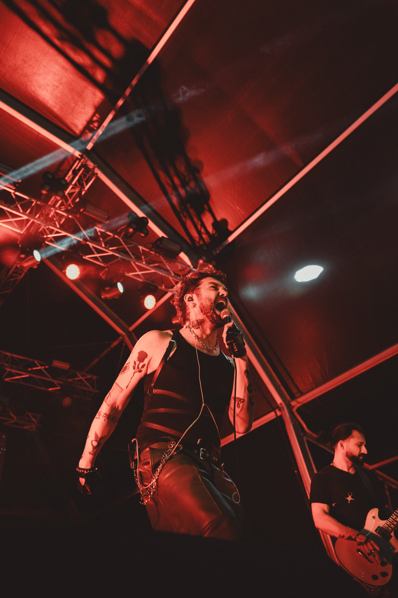

01Impacto ao vivo Live impact
Riffs pesados, refrões fortes e uma presença física que cria resposta imediata em sala, festival ou palco alternativo. Heavy riffs, strong hooks and a physical stage presence that creates immediate response in clubs, festivals or alternative stages.